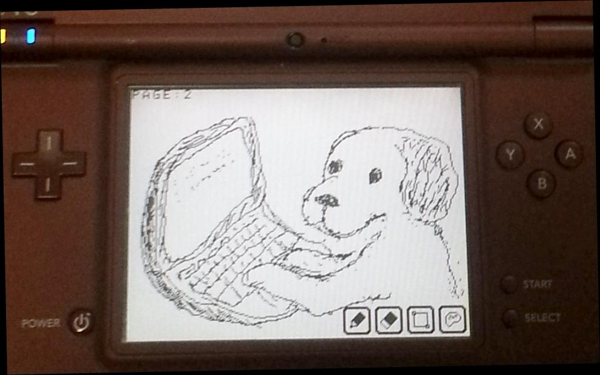

プロフィール

ﾊﾝﾄﾞﾙﾈｰﾑ
ぷちぷち３級
Twitter
自己紹介
自称：ゲームプログラマ見習い！
最近プチコンBASICに目覚めて、ゲームづくりを楽しむ。
プログラム書いたり
(最近は、ほとんどがプチコン)
ホームページ更新したり
(あえて旧世代のHTML直書き)
音楽奏でたり
(まだ自慢できるほどではない)
料理したり
(それほど上手くはないけど、
自炊の記録
)
まだ20代だけど、
(コンピュータ系のおっさんホイホイに弱い)
ゲームは好きだけど、
(それほど上手くはない)
クルマ好きだけど
(車は持ってない)
メール
mailto:damedamepg.3q.0816@gmail.com
自分の年表(どこにでもいる普通過ぎる人間)
1983 ファミリーコンピュータ(任天堂)発売
自分誕生
1990 スーパーファミコン(任天堂)発売
小学校入学
ファミリーコンピュータと戯れる
コースエディットにハマる
1994 プレイステーション(ソニー)発売
親戚より古くなったワープロを譲り受ける(4行しか表示できないやつ)
カナタイピングを覚える
外字(24*24の白黒)によるドット打ちに目覚める
1996 ポケットモンスター(赤緑)(任天堂)発売
1996 ニンテンドウ64(任天堂)発売
中学校入学
パソコンをはじめて授業で触る
高校入学
2000 プレイステーション２(ソニー)発売
2001 ゲームボーイアドバンス(任天堂)発売
2001 ゲームキューブ(任天堂)発売
学校でワープロ検定を目指す(ローマ字打ちに変更)
親戚より古くなったパソコンを譲り受ける(PC98)
当時はパソコンを使える人が近くにいなかったから、付属の5インチFDでゲームしてただけ。
親戚より古くなったパソコンを譲り受ける(Win98SE,HP製)
※ インターネット契約はなし
エミュレータでファミコンゲームにハマる
今でも好きなゲームはバーチャルコンソールで買ってプレイします。
ＢＭ９８(フリーのビートマニア風の音楽ゲーム)にハマる
BM98の打ち込みにハマる(自作曲を打ちめる)
高校卒業時に携帯電話を買ってもらう(Mova)
専門学校入学
友人に自作マシンを作ってもらう(Win2000)
※ インターネットを契約する
プログラム言語(C言語)に出会う
黒い画面に文字が表示されるだけなのに、面白くて感動したのを覚えている
ホームページ記述言語(HTML)に出会う
授業で勉強した割に、現在までホームページを公開することはなかった
プログラム言語(Java)に出会う
課題でFOMA i-modeアプリ制作を行う(エミュで動かしただけ)
携帯電話買い替え(Foma)
CD-Rへのライティングを覚える
簡易的な音声編集を覚える
アイドルのライブDVDからライブCDが作りたかったので
待ち受け画像を作るため、画像編集を始める
くだらない合成画像づくりにハマった
2004 ＰＳＰ(ソニー)発売
2004 ニンテンドーＤＳ(任天堂)発売
就職のためなんとなく上京
友人に自作マシンを作ってもらう(WinXP)
携帯電話買い替え(Android2.2)
2006 プレイステーション２(ソニー)発売
2006 Ｗｉｉ(任天堂)発売
大合奏バンドブラザーズＤＸにハマる
何曲打ち込んだことか(耳コピはできなかった)
メイドイン俺をやり込む
ドット絵と、プログラマ仕込みのAIを極めた
2011 ニンテンドー３ＤＳ(任天堂)発売
プチコンにハマる
やってることは20年前のパソコンなのに、コンピュータがこれほど面白いと思ったことはない
３ＤＳ持ってるけど、プチコンのために、ＤＳｉＬＬを購入
プチコン作品とか
パソコンショップでパソコンを購入(Win7)
ゲームやらない自分にはメモリ何ギガも必要ない、せっかくだし仮想環境作ってサーバーの勉強でもしようかな。
携帯電話買い替え(Android4)
mova時代は買い替えに興味がなかったのに、買い替え周期が短くなっている
トップに戻る